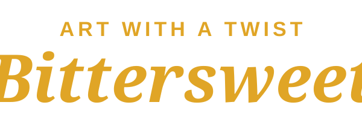

Art with a twist
Bittersweet
Brand kit test page. Placeholder logos: final files to come.
Logos

Colours
Midnight
#142127
Mustard
#E0A526
Tomato red
#D8432E
Cream
#F3EAD8
Teal
#1F7A74
Burgundy
#6E1F2A
Fonts
Bittersweet
Wordmark: Anhattan
Art with a twist
Tagline: Bench Gadgent
Uno, uno, uno
Accent script: Yellowtail